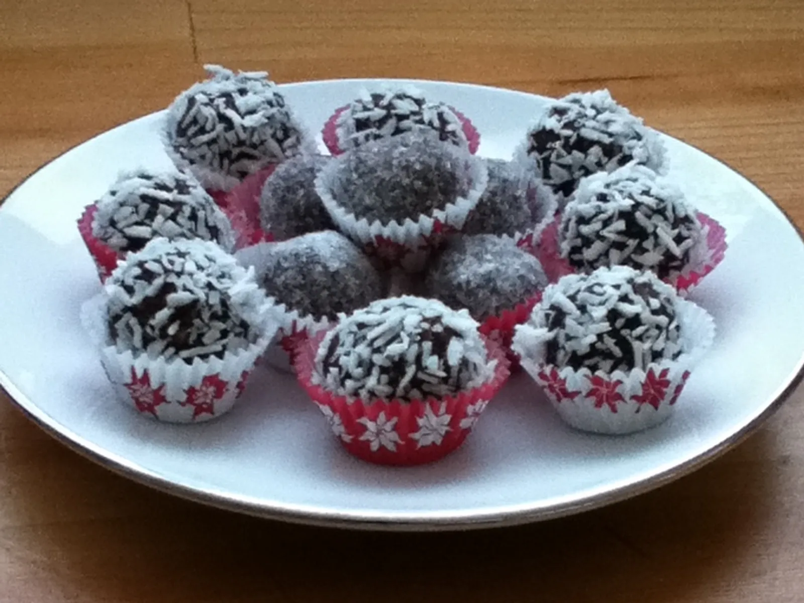

Umutiti margarin, šećer, kakao, ovsene pahuljice i kafu dok se svi sastojci ne povežu.
Od smjese formirati kuglice željene veličine.
Kuglice uvaljati u kokos ili šećer po želji.
Staviti u hladnjak na oko 30 minuta da se stegnu prije posluživanja.